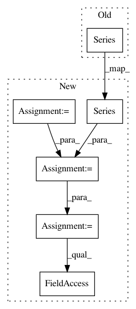

374ca541aaf62aba88a144acbbc7398ca3e995ef,category_encoders/ordinal.py,OrdinalEncoder,ordinal_encoding,#Any#Any#Any#Any#Any#,255
Before Change
if handle_missing == "return_nan":
data[np.nan] = -2
mapping = pd.Series(data)
mapping_out.append({"col": col, "mapping": mapping, "data_type": X[col].dtype}, )
return X, mapping_out
After Change
mapping_out = []
for col in cols:
nan_identity = np.nan
if util.is_category(X[col].dtype):
categories = X[col].cat.categories
else:
categories = X[col].unique()
index = pd.Series(categories).fillna(nan_identity).unique()
data = pd.Series(index=index, data=range(1, len(index) + 1))
if handle_missing == "value" and ~data.index.isnull().any():
data.loc[nan_identity] = -2
elif handle_missing == "return_nan":
data.loc[nan_identity] = -2
mapping_out.append({"col": col, "mapping": data, "data_type": X[col].dtype}, )
In pattern: SUPERPATTERN
Frequency: 3
Non-data size: 6
Instances
Project Name: scikit-learn-contrib/categorical-encoding
Commit Name: 374ca541aaf62aba88a144acbbc7398ca3e995ef
Time: 2018-11-26
Author: jcastaldo08@gmail.com
File Name: category_encoders/ordinal.py
Class Name: OrdinalEncoder
Method Name: ordinal_encoding
Project Name: QUANTAXIS/QUANTAXIS
Commit Name: 38a07735faccfe4530860f1a967e195bc70b739c
Time: 2019-04-01
Author: 40067351+zsl3034669@users.noreply.github.com
File Name: QUANTAXIS/QAARP/QAAccount.py
Class Name: QA_Account
Method Name: daily_cash
Project Name: QUANTAXIS/QUANTAXIS
Commit Name: 38a07735faccfe4530860f1a967e195bc70b739c
Time: 2019-04-01
Author: 40067351+zsl3034669@users.noreply.github.com
File Name: QUANTAXIS/QAARP/QAAccount.py
Class Name: QA_Account
Method Name: daily_hold